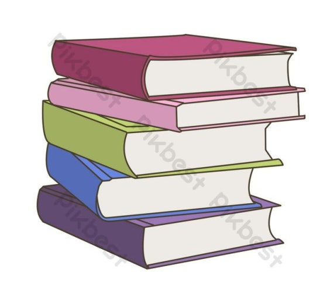

스마트 보건실
이제 보건실 앞에서 줄 서지 마세요! 대기 인원을 온라인으로 확인하여 더 빠르고 편리하게 이용하세요.
맛있는 급식 건의함

더 맛있고 만족스러운 급식을 위해 학생들의 의견을 모으고 급식에 관련된 건의사항을 자유롭게 작성하는 공간입니다.
음악 신청
점심시간에 들을 노래를 온라인으로 신청하고 현재 신청곡 목록을 확인할 수 있습니다.
동아리 소개
우리 학교에 있는 동아리를 소개하는 웹사이트입니다. 동아리 목록과 간단한 정보를 확인하고 지원해보세요.
풍생고 익명 채팅
풍생고등학교 학생회에게 학교 관련 궁금한 점을 부담없이 익명으로 질문할 수 있는 채팅방입니다.
교내 독서 프로그램

내가 읽어본 책을 다른 친구들에게 추천하는 추천글을 작성하고 내가 좋아하는 글귀를 친구들과 공유해보세요.
학급 분실물 센터
교내 분실물을 실시간으로 조회하여 위치를 파악하고, 습득물 발생 시 담당 선생님께 즉시 알림 메시지를 전송하는 시스템입니다.
우리반 알림이
우리반의 중요한 일정과 공지사항을 간편하게 확인하세요.